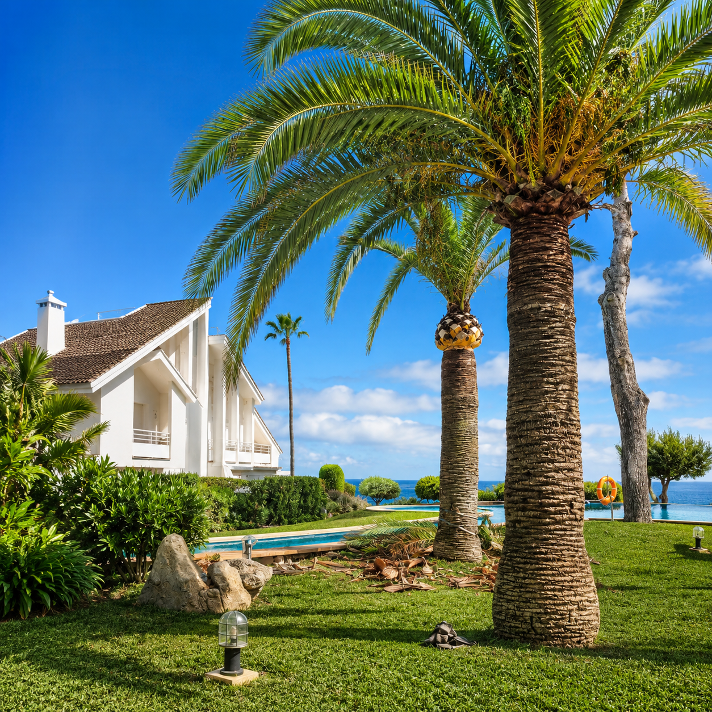
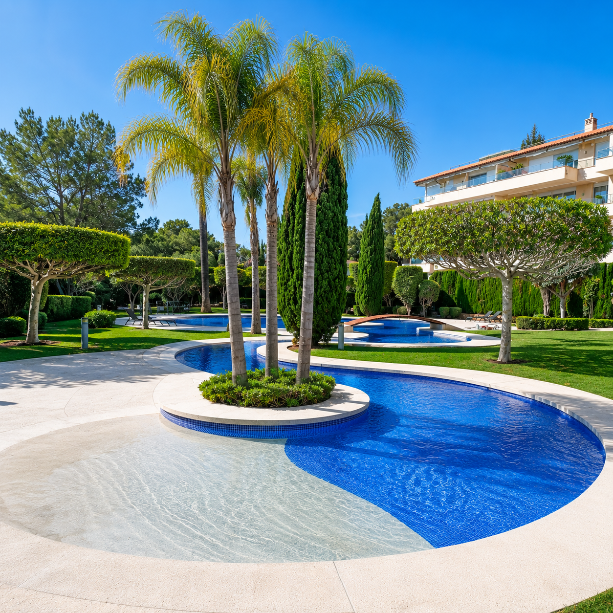

01
Presencia Digital
Diseño
Web
Interfaces digitales de alto rendimiento orientadas a la conversión y con una experiencia estética premium.
Interfaces digitales de alto rendimiento orientadas a la conversión y con una experiencia estética premium.
Narrativas dinámicas y contenido audiovisual de alta fidelidad optimizado para enganchar a tu audiencia.
Montaje rítmico, corrección de color cinemática y tratamiento de sonido profesional.
Postproducción del futuro. Escalado inteligente, restauración de archivos y generación de assets mediante IA avanzada.
Plataforma de compraventa de vehículos de segunda mano con catálogo dinámico, filtros avanzados y contacto directo por WhatsApp.
procar-sales.comWeb de alto impacto para una sala de boxeo real. Diseño bold y directo pensado para convertir visitas en inscripciones.
madu-box.vercel.appPresencia digital premium para empresa de jardinería en Mallorca. Fotografía mediterránea, catálogo de servicios y contacto directo.
jardines-servicios-r-a.vercel.appReels de producción propia. Activa el sonido.
Arrastra la línea para comparar la fotografía original con el resultado tras edición y reconstrucción IA.





Cuéntanos qué necesitas. Analizamos tu caso y te proponemos la solución más efectiva.
Contactar con DYS